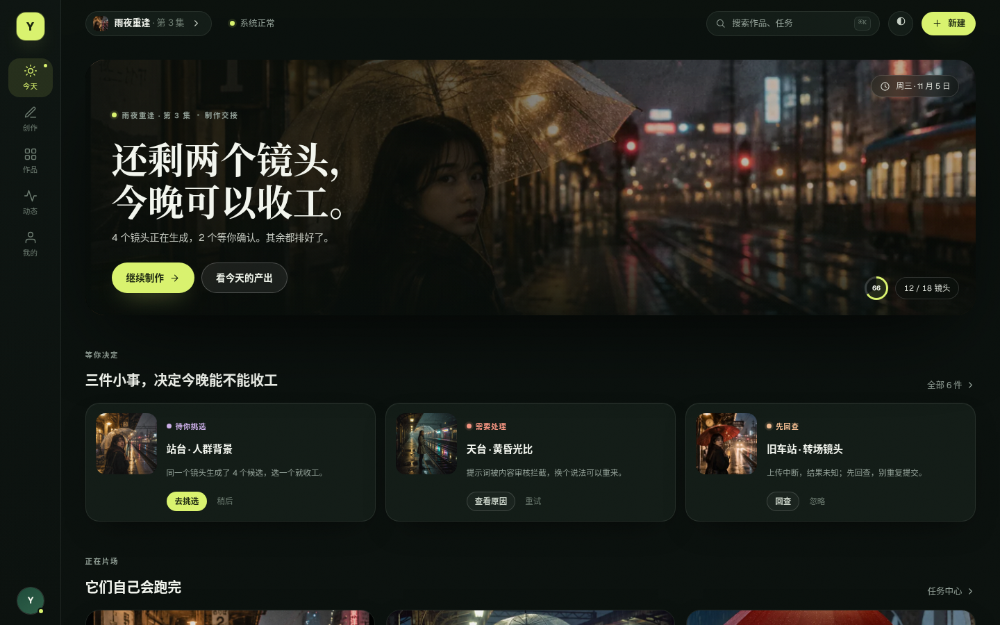
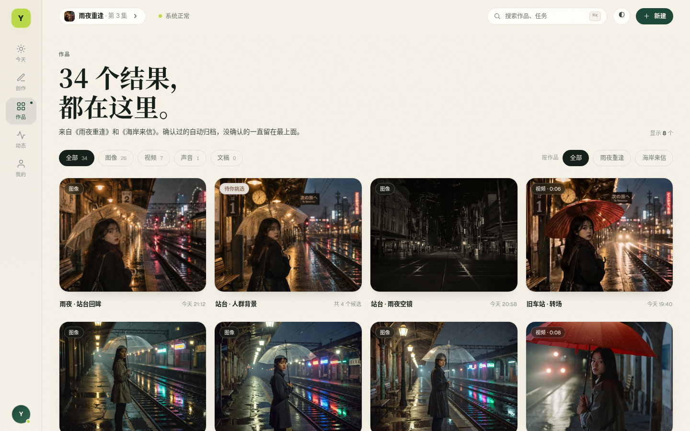
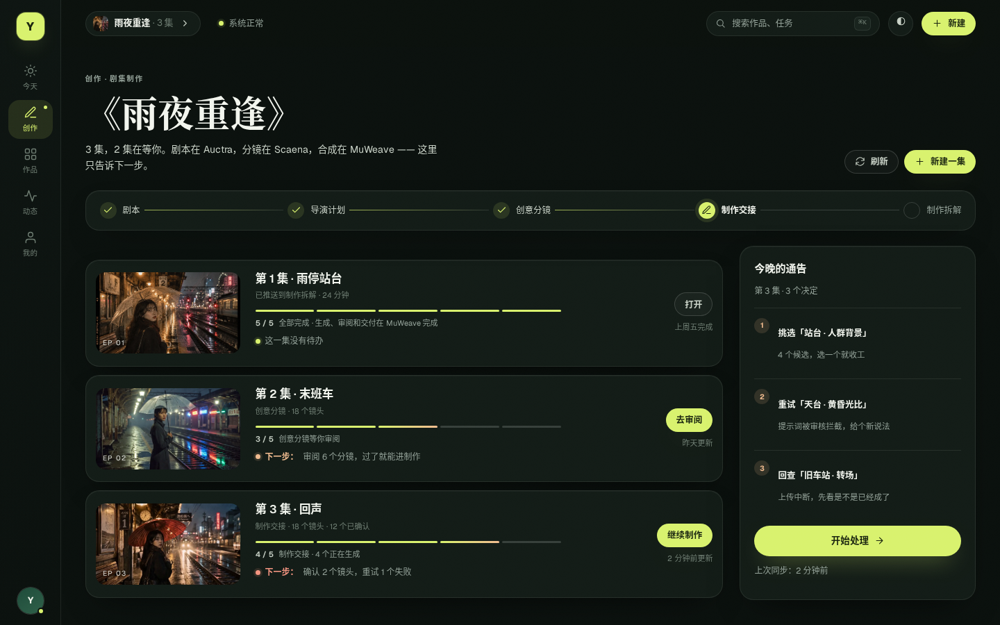
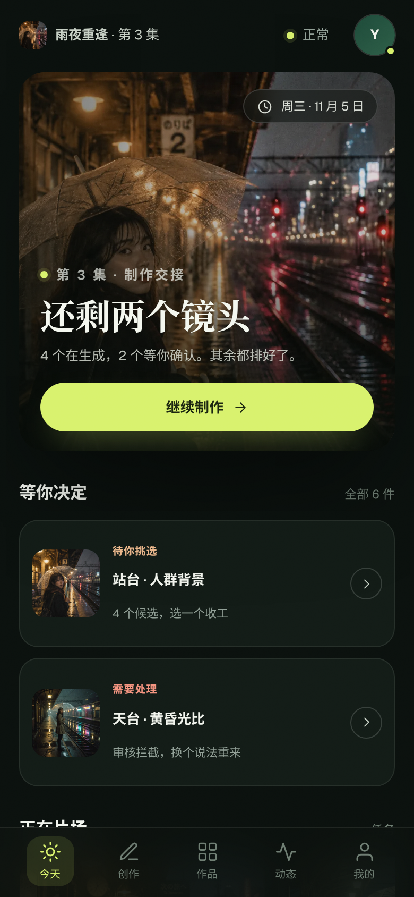
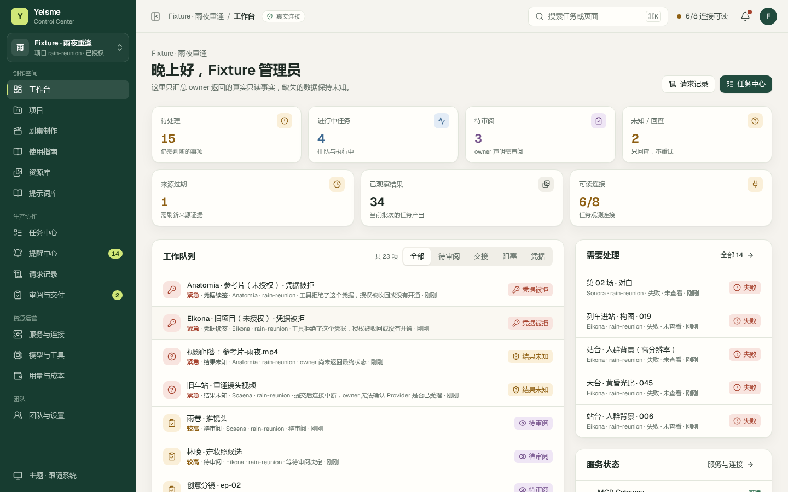
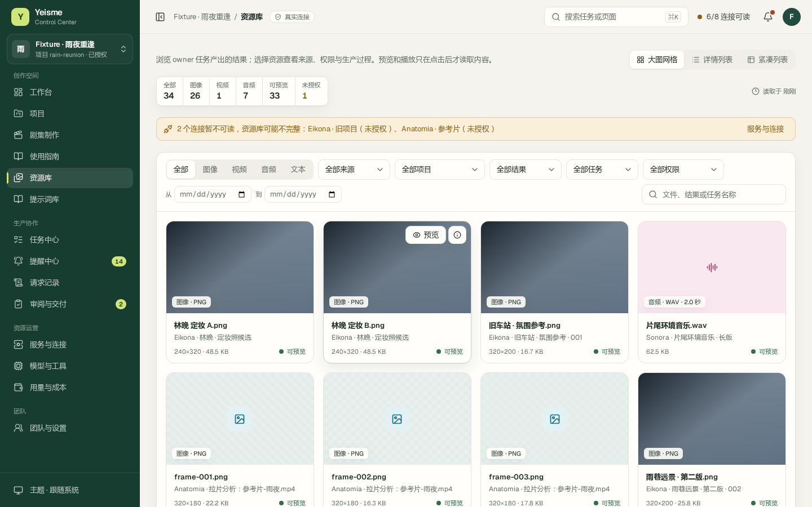
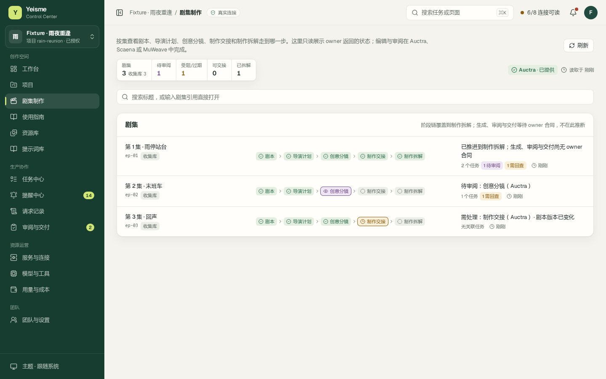
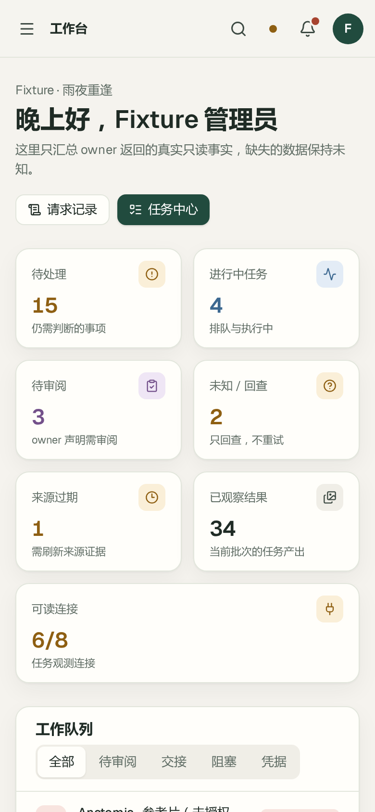

01
一次只推一件事
首屏只回答一个问题：现在最值得做的就是这一件。其余的工作项按「等你决定」排，不铺成仪表盘。
设计提案 · v19 · 2026-11-05
控制中心不该像一张运营报表。它是你每天打开、继续做东西的地方。
这四屏把「现在需要我做什么」放回第一位，把系统状态压到它该在的位置。
01
首屏只回答一个问题：现在最值得做的就是这一件。其余的工作项按「等你决定」排，不铺成仪表盘。
02
结果用画面说话：大图、播放、波形、版本。列表降级为补充，不再让表格占据第一屏。
03
连接、预算、同步时间收成一条安静的状态线；只有真的坏了，才升到能看见的地方。




前后对比




原型边界：四屏都是静态可点原型，使用项目内已有的公开演示画面与 fixture 叙事，不连接任何 owner、不发起写入、不进入构建。设计说明、信息架构映射与落地路线见 docs/design/c-end-experience-v1.md。
本地预览：在 client/yeisme-control-center 下运行 python3 -m http.server 4330，打开 http://127.0.0.1:4330/design-proposals/c-end-studio-v19/prototype/index.html。